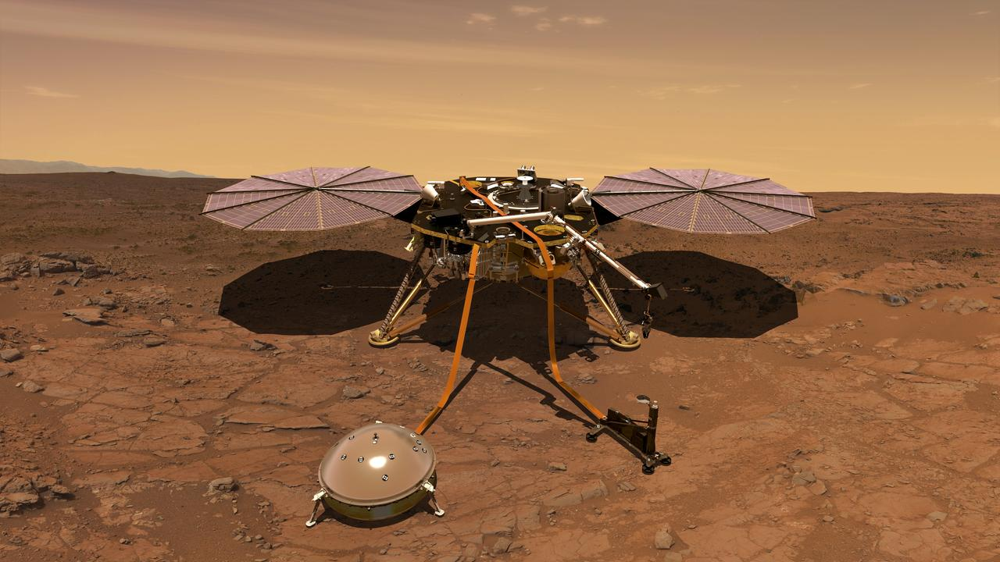
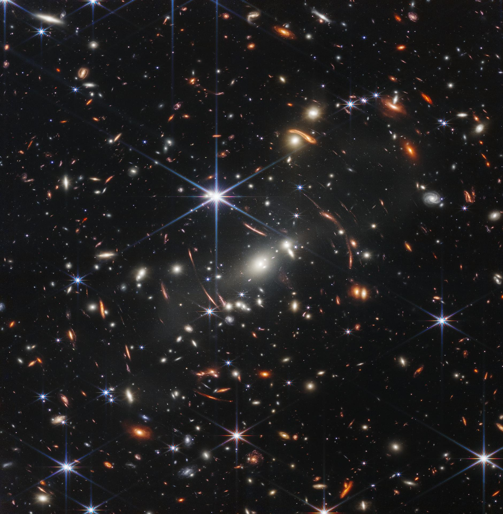
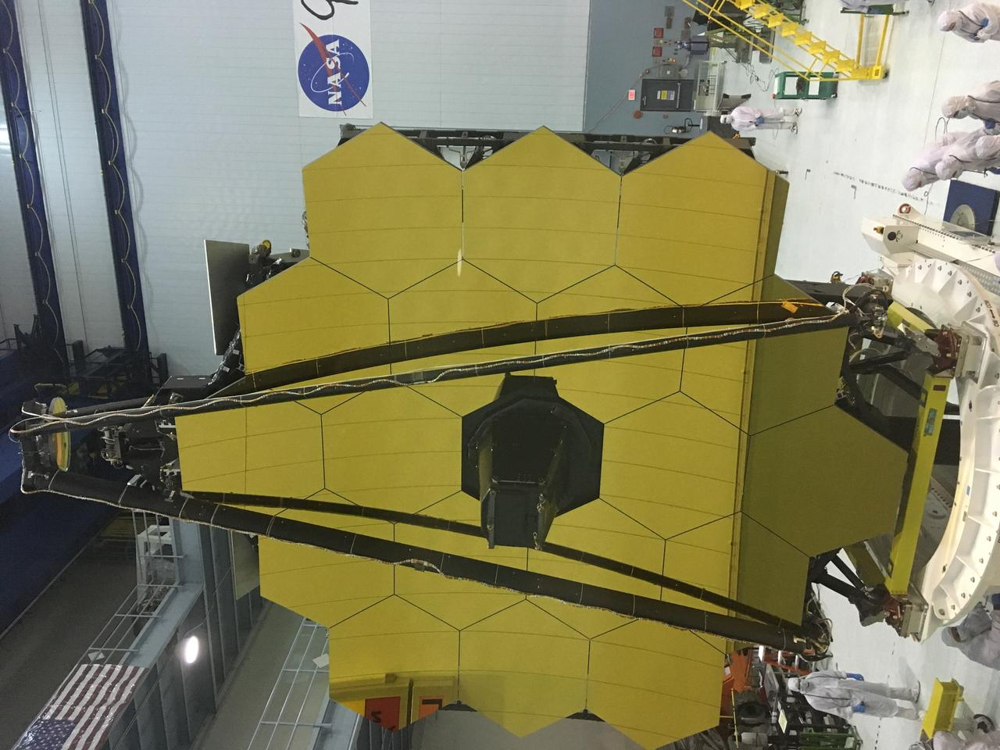

MUNDO ROCOSO
Marte
Agua antigua
y geología
NovaQuest / Centro de descubrimiento

Exploración visual / Archivo 001
Un atlas interactivo para convertir la curiosidad en una ruta de exploración científica.
Entrar al archivo ↗A / PROPÓSITO
NovaQuest reúne imágenes, datos y pequeñas misiones educativas en una interfaz inspirada en un archivo científico contemporáneo.
misiones
disponibles

B / ARCHIVO DE DESTINOS
C / TRANSMISIÓN
Una visualización de NASA construida con datos de observación realiza un acercamiento desde la órbita hasta la superficie.
D / PRÓXIMA MISIÓN